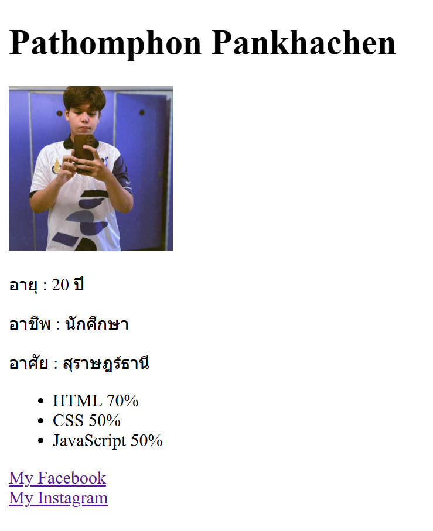

โจทย์นี้จะให้คุณสร้างหน้าเว็บ HTML ง่ายๆ เพื่อแสดงข้อมูลส่วนตัวของคุณ เช่น ชื่อ รูปภาพ และทักษะต่างๆ โดยใช้แท็ก HTML พื้นฐาน
เหมาะสำหรับผู้เริ่มต้นที่ต้องการฝึกฝนการใช้งานโครงสร้าง HTML
สิ่งที่โจทย์ต้องการ :
• สร้างหัวข้อหลัก (H1) แสดงชื่อ-นามสกุลของคุณ
• แทรกรูปภาพโปรไฟล์ของคุณ (ใช้แท็ก <img> ) คุณสามารถใช้ URL รูปภาพ placeholder ได้ เช่น 'https://via.placeholder.com/150'
• สร้างส่วนข้อมูลส่วนตัว (เช่น อายุ, อาชีพ, เมือง) โดยใช้แท็กย่อหน้า (<p>) หรือแท็กที่เหมาะสมอื่นๆ
• สร้างรายการทักษะที่คุณมี (เช่น HTML, CSS, JavaScript) โดยใช้รายการแบบไม่เรียงลำดับ (<ul> และ <li>)
• เพิ่มลิงก์ไปยังโซเชียลมีเดียที่คุณชื่นชอบอย่างน้อย 2 ลิงก์ (ใช้แท็ก <a> และคุณสมบัติ href พร้อม target='_blank') เช่น GitHub, LinkedIn หรือ Facebook
